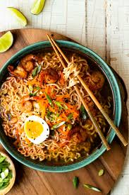

Ramen Noodles

Description:
Cozy up to this healthy bowl of goodness. Warming, soothing and full of flavour!
Ingredients list:
- 1 tbsp sesame oil
- 1 tsp miso paste
- 2 tbsp soy sauce
- 2 tbsp rice vinegar
- 1 tbsp chili paste
- 1 tbsp ginger
- 1 tbsp garlic
- 1 tbsp vegetable oil
- 2 cups vegetable broth
- 1 bunch of noodles
- 2 chicken breast
- 100g mushrooms
- 2 spring onions
- 1 tbsp bok choy
Instructions:
- Heat the sesame oil in a large pot over medium heat.
- Add the miso paste, soy sauce, rice vinegar, chili paste, ginger, and garlic. Cook for 1 minute.
- Add the vegetable oil, vegetable broth, and 4 cups of water. Bring to a boil.
- Add the chicken breast. Cook for 10 minutes.
- Remove the chicken breast and shred it. Add it back to the pot.
- Add the noodles, mushrooms, spring onions, and bok choy. Cook for 5 minutes.
- Enjoy!